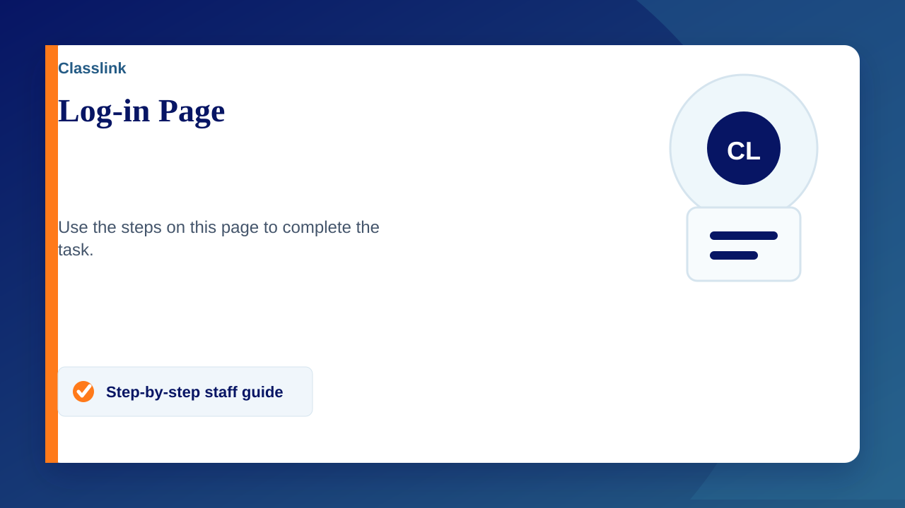
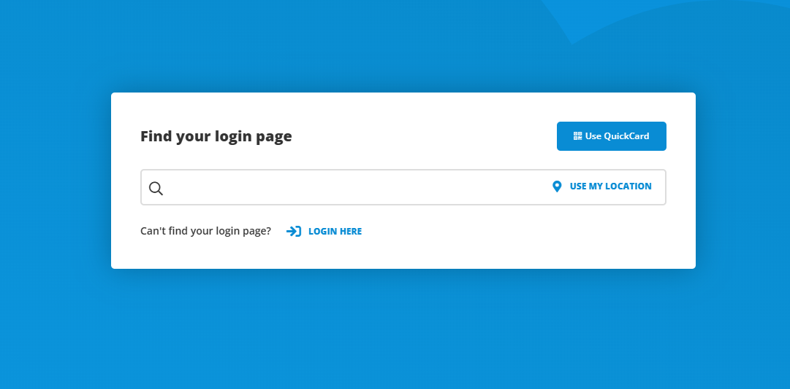

Direct link to classlink - https://launchpad.classlink.com/ispschools
If yousearched for classlink on Google and go directly to their website to log in, you may see a page like this
- Click "login here" under the search bar
Alternatively you can search for International Schools Partnership - Click the Microsoft Icon
- Log in with your school email address.
Error logging in?
If you are already logged into a microsoft account (personal or other) it may try to sign you in to classlink automatically with no option to change account. To solve this follow the steps below
- Go to https://myaccount.microsoft.com/
- Select your profile picture (or initials) in the top-right corner
If you do not see this then just click "sign in" - Either sign out of your personal account or add another account
- Sign in with your school details
- Now your school account is signed in, go back to Classlink – it should now take you straight in via your school account, or ask you which account to use
